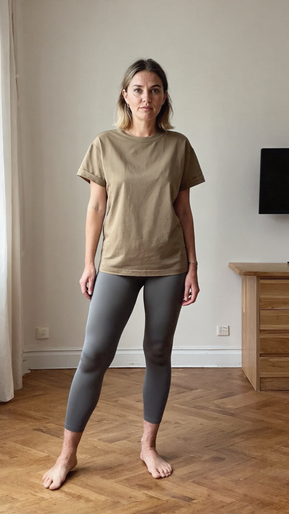
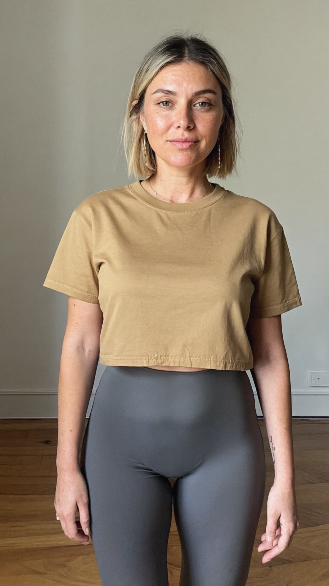
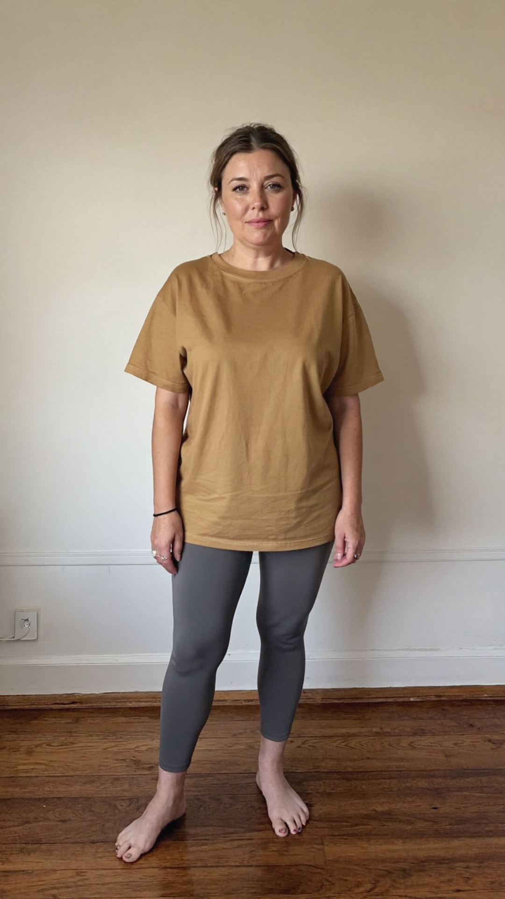
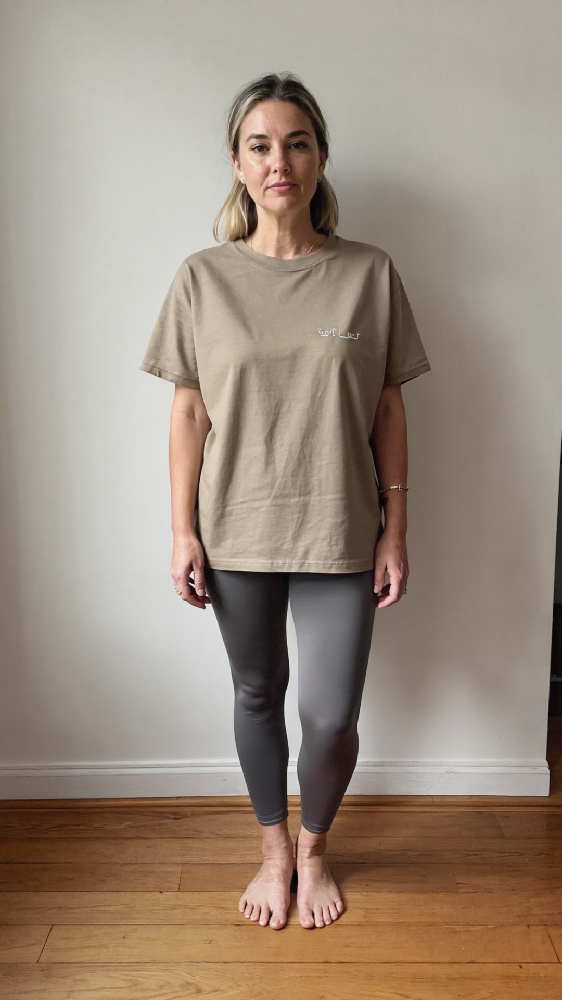
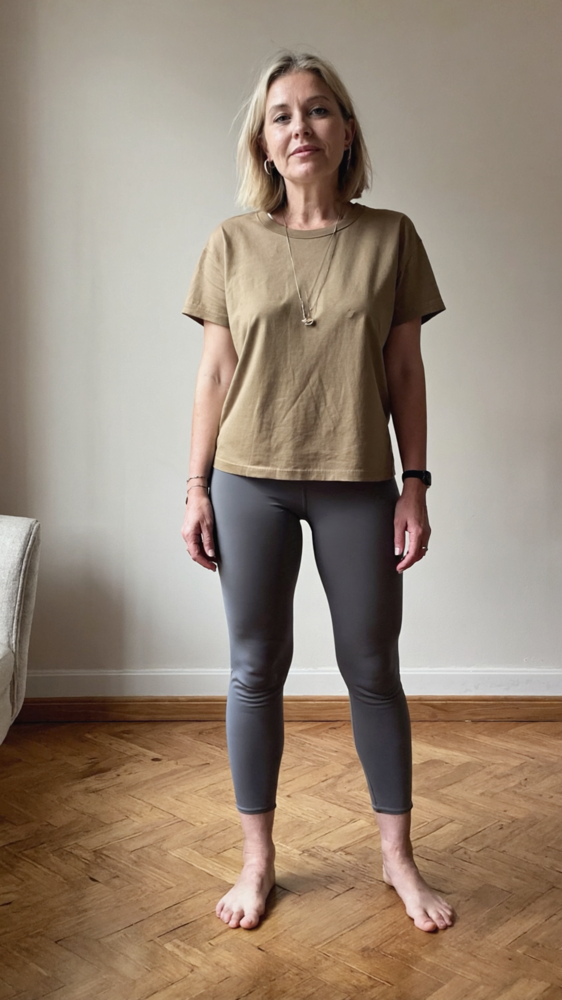
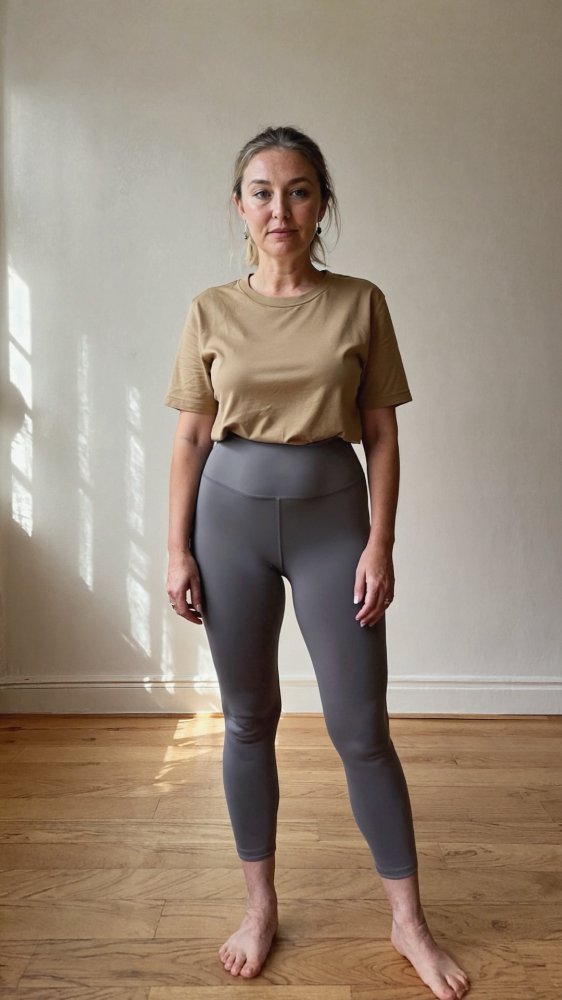

Pick one. Its file is committed into the repo at
assets/character/portrait.jpg and named in
assets/character.json as approved_file, and every
generated clip from then on shows her. The Runway URLs below expire within a
day or two, which is why the bytes are kept rather than the link.





